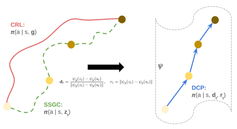
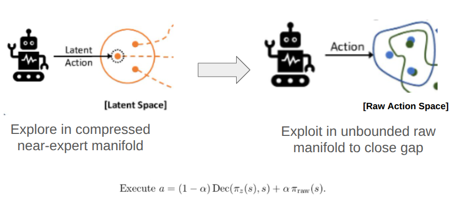
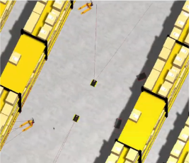
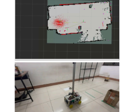
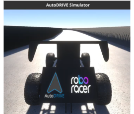

Research
I'm interested in reinforcement learning, multi-agent systems, robot learning and interpretability. Most of my current research work focuses on major problems faced in transfer and deployment of RL and MARL algorithms into real life robotics. I believe that resolving problems like sample-efficiency, scalability and interpretability are core to the functioning and practical application of RL in robotics.
My broader research goal is essentially creating robust and safe robots with accompanying RL algorithms that can "reason" by themselves. The idea that autonomous vehicles, robots and other agents can co-exist with humanity is something that gives me a lot of motivation. Though, I believe that robots which can do tasks that humans cannot do will be more helpful in the long run!
|
|

|
Direction-Conditioned Policies for Online Goal-Conditioned Reinforcement Learning
Swaminathan S K,
Damiya Gondha,
Theyanesh Eswaramoorthy Rajahkrishnan,
Aritra Hazra
arXiv preprint, 2026 / ICML Workshop (CompLearn), 2026 (Poster)
arXiv /
pdf /
OpenReview
Contrastive RL learns rich reachability geometry, yet standard actors ignore it by conditioning on raw coordinates. DCP bridges this gap by conditioning the policy on representation-space vectors toward online replay waypoints—transferring seamlessly to zero-shot goal reaching at test time and causally steering trajectory execution.
|
|

|
SPAARS: Safer RL Policy Alignment through Abstract Exploration and Refined Exploitation of Action Space
Swaminathan S K,
Aritra Hazra
arXiv preprint, 2026
arXiv /
pdf
A curriculum framework for offline-to-online RL that initially constrains exploration to a CVAE latent manifold for sample-efficient, safe behavioral improvement, then transfers to the raw action space — breaking the exploitation ceiling imposed by the decoder's reconstruction loss. An advantage-gated mode selection mechanism grounded in the Option-Critic termination gradient replaces global α schedules with per-state decisions. Standalone SPAARS exceeds the offline IQL baseline on D4RL locomotion tasks.
|
|

|
LMPC: Safe Multi-Robot Navigation
Mobile Ground Robots, AGV.AI (Inter IIT Tech Meet 13.0 — Solo Gold, IIT Bombay, 2024)
A general safe navigation framework for multi-robot mobile ground systems. Built for and awarded Solo Gold at Inter IIT Tech Meet 13.0 hosted by IIT Bombay (2024).
|
|

|
Rustee
Mobile Ground Robots, IIT Kharagpur
A mobile ground robot with a vertical actuator designed to scan racks. Built for Inter IIT Tech Meet 14.0 (2025) as a cross-team collaboration at IIT Kharagpur, with contributors from AGV.AI and across campus.
|
|

|
F1Tenth Autonomous Racing
Mobile Ground Robots, AGV.AI (1st in prelims worldwide, RoboRacer SimLeague @ ICRA 2025)
ICRA 2025 results; CDC 2024 results
An autonomous racing pipeline implementation, deployed in the F1Tenth / RoboRacer SimLeague: 1st in prelims and 9th in finals worldwide at ICRA 2025; 8th in prelims worldwide at CDC 2024.
|
|